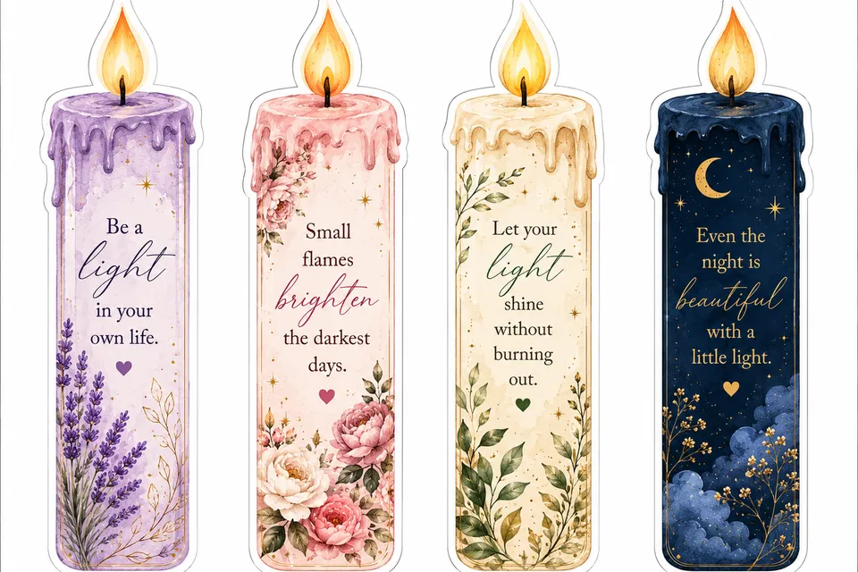
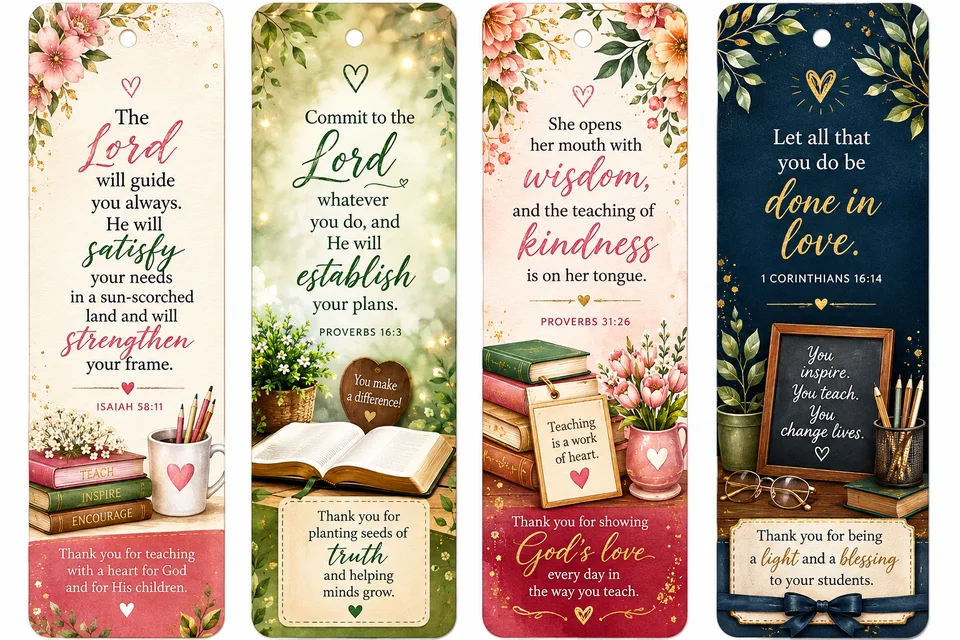

Christmas Gift Ideas from Goa: Personalised Cards, Labels and Keepsakes
Christmas in Goa means sweet boxes going door to door, parish celebrations and family visits. Here are six personal touches we design and print in Goa and deliver across India. Order by early December so everything arrives before Christmas.
1. Christmas cards and tags with your family name
Mini cards and gift tags for every box of kuswar you share, printed with your family name or a short message. Sets start at 12, and we can match the envelopes and stickers.
2. Candle bookmarks with quotes about light
Four candle-shaped bookmarks with gentle quotes about light, a thoughtful gift for Advent, carol singers and Sunday school classes.

3. Scripture bookmarks for parishes and teachers
Bookmarks with Bible verses are an easy gift to give a whole parish group, choir or class. We can add your church's name and a Christmas verse.

4. Verse fridge magnets
A small gift that stays in the kitchen all year. Cut-to-shape magnets with verses, flowers or a family photo.

5. Kuswar and hamper labels
Homemade neureos, kulkuls and bebinca deserve a proper label. We print round and rectangular labels with your name, plus thank-you stickers to seal each box. Home bakers can add ingredient and best-before labels too.

6. Names cut in vinyl
With our Cricut we cut names in vinyl and iron-on for baubles, stockings, gift bags and matching family Christmas T-shirts, so every gift under the tree is clearly someone's.
Ordering for your family, parish or business?
Tell us what you need and how many, and we will send you a price. Orders usually take 5 to 6 days to reach you anywhere in India, so message us by early December.
Order on WhatsApp See Christmas printingAlso see our wedding stationery ideas and Diwali gift ideas.